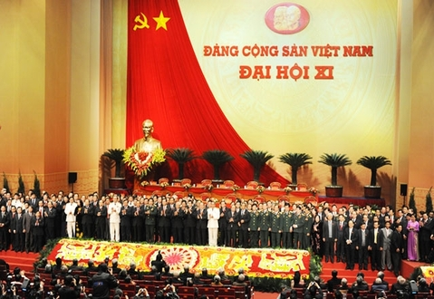

I:HÌNH ẢNH VỀ ĐẠI HỘI XI

hình ảnh về đại hội 11

Quan điểm phát Triển |
| (1) Phát triển nhanh gắn liền với phát triển bền vững |
| (2) Đổi mới đồng bộ,phù hợp về KT và chính trị |
| (3)Mở rộn dân chủ,phát huy nhân tố con người |
| (4)Phát triển lực lượng sản xuất và hoàn thiện quan hệ sản xuất |
| (5)Xây dựng nền KT độc lập tự chủ |
Các đột phá chiến lược |
| (1) Hoàn thiện thể chế KTTT định hướng XHCN |
| (2) Phát triển nhanh NNL,NNL chất lượng cao,đổi mới căn bản và toàn diện nền giáo dục quốc dân. |
| (3)Xây dựng hệ thống kết cấu hạ tầng đồng bộ,hiện đại tập trung vào hệ thống giao thông và hạ tầng đô thị lớn. |